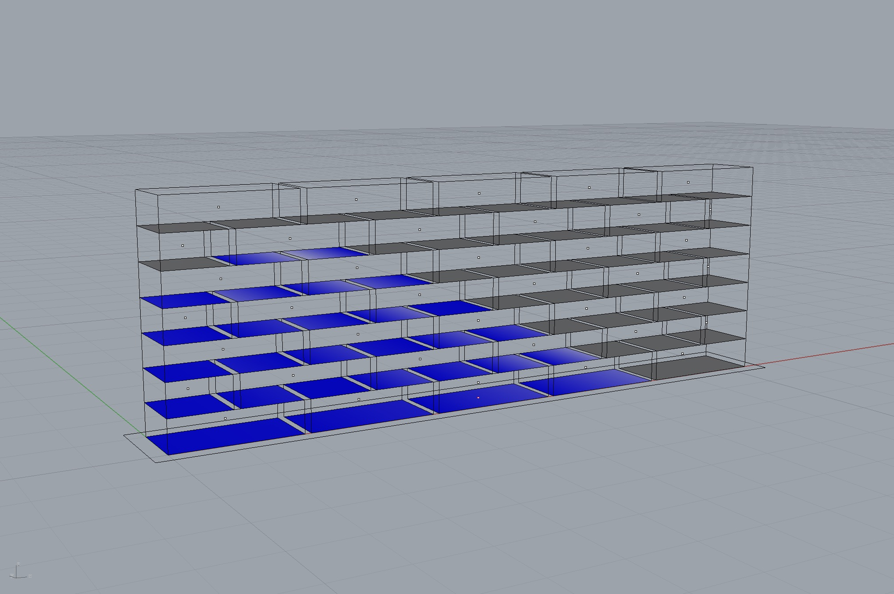

Equilibrium of a building sequence in Rhino

"""Compute the contact forces required for static equilibrium of an assembly.
1. Make an Xfunc of ``compute_interface_forces``
2. Load an assembly from a JSON file.
3. Make a sub-assembly corresponding to the building sequence.
4. Check if the sub-assembly is properly supported.
5. Compute interface forces.
6. Visualise in Rhino.
"""
from __future__ import absolute_import
from __future__ import division
from __future__ import print_function
import os
from compas_rhino.utilities import XFunc
from compas_assembly.datastructures import Assembly
# make an XFunc version of the compute interfaces function
compute_interface_forces_xfunc = XFunc('compas_rbe.equilibrium.compute_interface_forces_xfunc')
compute_interface_forces_xfunc.python = os.path.join(os.environ['HOME'], 'anaconda3/bin/python')
# wrap for convenience
def compute_interface_forces(assembly, **kwargs):
data = {
'assembly': assembly.to_data(),
'blocks': {str(key): assembly.blocks[key].to_data() for key in assembly.blocks},
}
result = compute_interface_forces_xfunc(data, **kwargs)
assembly.data = result['assembly']
for key in assembly.blocks:
assembly.blocks[key].data = result['blocks'][str(key)]
# just so Rhino(Mac) gets the filepaths right
HERE = os.path.dirname(__file__)
# load an assembly from a JSON file
assembly = Assembly.from_json(os.path.join(HERE, '../data/assembly_courses.json'))
# define a sequence of buildable blocks
sequence = [28, 22, 23, 16, 17, 18, 11, 12, 13, 5, 6, 7, 8, 0, 1, 2, 3, 38]
# create a sub_assembly for the sequence
sub = assembly.subset(sequence)
# check if the sub_assembly is supported
supports = list(sub.vertices_where({'is_support': True}))
if not supports:
raise Exception('The sub-assembly has no supports.')
# compute the interface forces
compute_interface_forces(sub, solver='CVXOPT', verbose=True)
# update the original assembly
for u, v, attr in assembly.edges(True):
if sub.has_edge(u, v):
attr['interface_forces'] = sub.get_edge_attribute((u, v), 'interface_forces')
else:
attr['interface_forces'] = None
# visualise the result
assembly.draw({
'layer': 'Assembly',
'show.vertices': True,
'show.interfaces': True,
'show.forces': True,
'show.forces_as_vectors': False,
'mode.interface': 0,
'scale.force': 1.0
})